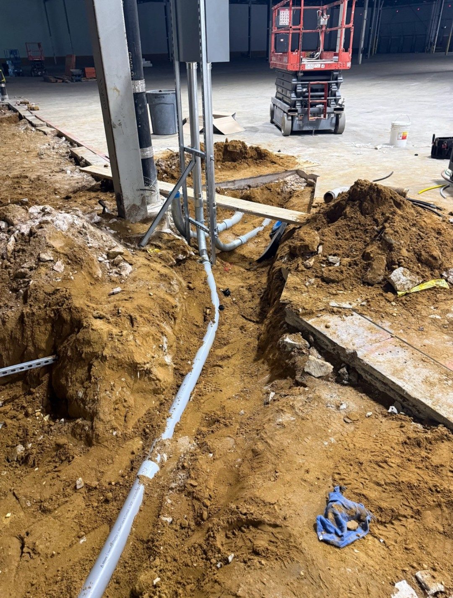
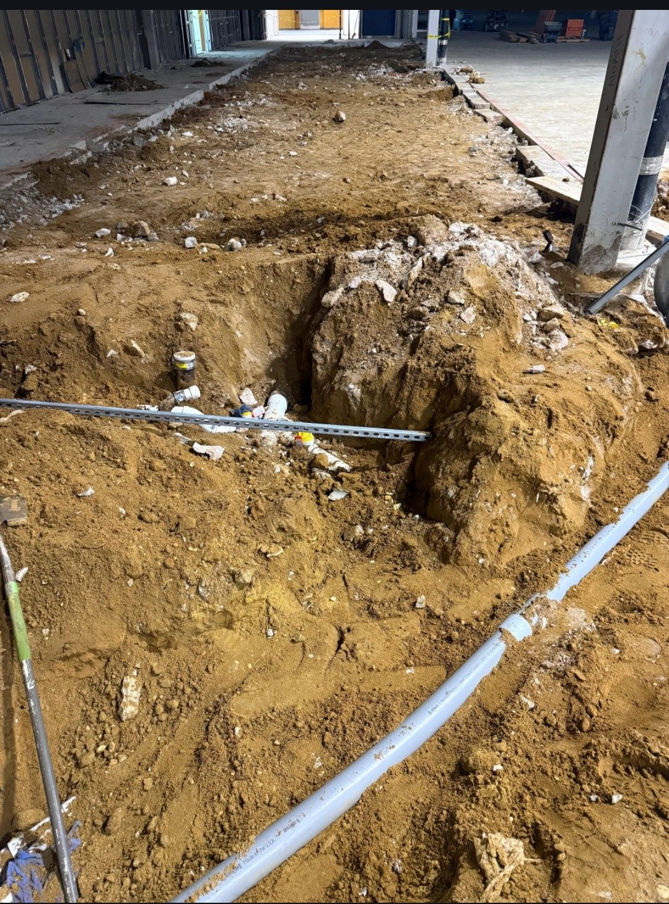
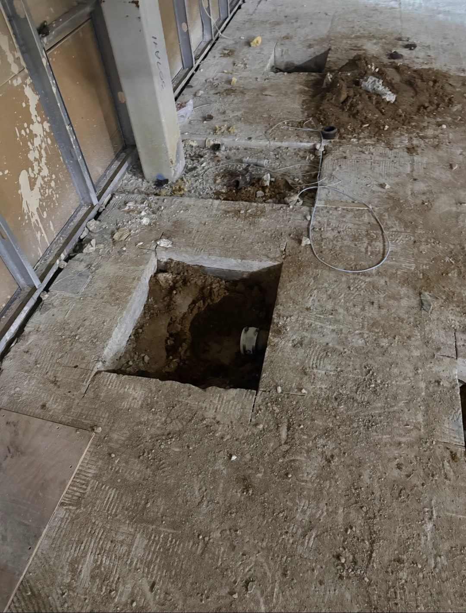

← ALL PROJECTSConcrete / Commercial
2000 Bishops Gate Blvd.
Concrete demolition, subgrade preparation, and pour-back coordination at 2000 Bishops Gate Blvd. in Mount Laurel, New Jersey.
THE WORK
Project scope and field coordination.
GMT coordinates concrete removal, soil and subgrade work, slab preparation, and inspections supporting the pour-back scope.
Project Scope
- Concrete demolition
- Soil and subgrade work
- Slab preparation
- Inspection coordination
- Pour-back coordination
PROJECT GALLERY
2000 Bishops Gate Blvd. — project gallery.
Concrete removal and subgrade preparation.


